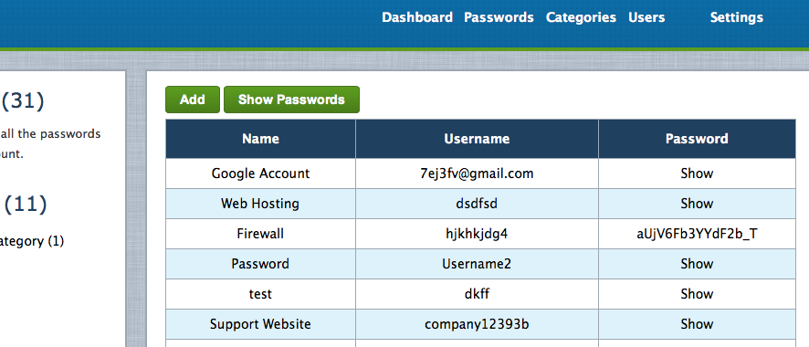
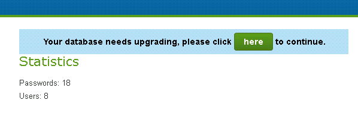

“Mr Password” Documentation by “Michael Dale” v4.0
“Mr Password”
Thank you for purchasing Mr Password. If you have any questions that are beyond the scope of this help file, please feel free to log a support request via our support portal. Thanks so much!
Table of Contents
- Welcome
- Features
- System Requirements
- Install
- Upgrading
- Release Log
- Credits
- License
Welcome - top
Welcome to Mr Password also known as MrP.

MrP is an online multi user password manager.
It is great for users and businesses who wish to keep their passwords in a secure manner.
You can create multiple users each with their own password list. Users can manage their own categories, generate passwords and even share specific categories with other users.
MrP supports the English Language only.
MrP is designed to be a stand alone web application, you are of course welcome to modify the code, but I cannot support modified code if it breaks.
Whenever a new version of MrP is released an upgrade script is included (more below), please make sure you keep MrP up to date.
Please note: If you modify the MrP code the upgrade script may fail. It will be up to you to fix this if a problem occurs. You must support your own code changes.
Features - top
MrP includes a number of features.
- Password Storage
- Multiple Users
- Security Logging
- Password Generator
- Password Categories
- Password Custom Fields
- Password History
- Sharing Categories
- Brute Force Login Protection
- Active Directory and LDAP Authentication Support (great for businesses)
System Requirements - top
MrP is written in PHP5.3 and uses a MySQL5 database. MrP is a "Web Application" that must be installed on a Web Server. MrP will do a basic check of your web server during the install.
You must install MrP on a web host that supports PHP5.3, MySQL5 and Apache.
You may also install MrP on your personal computer by using one of the many options (i.e google WAMPserver or XAMPP), this is not covered in this document.
The full system requirements can be found below.
- PHP 5.3+
- MySQL 5+ with 1 empty database
- Apache (with mod rewrite enabled)
- A Web Browser that supports HTML5/Javascript (for the client)
- PHP able to write files to the installed directory (only required for install)
- PHP PDO Extension (with MySQL driver)
- PHP Mcrypt Extension
- PHP LDAP Extension (only required when using Active Directory)
Install - top
There are a number of steps required to install MrP.
- Copy the unzipped contents of the zip file to somewhere on your webserver. You can install MrP in a folder on your existing web hosting or setup a new subdomain.
- Create an empty MySQL database (most hosting provides a control panel that allows you to do this).
- Ensure your PHP install can create files (for config.php to be created during the install).
- Run http://mrp.example.com/install/ from your web browser.
- Follow the steps.
- Backup your MySQL database and user/settings/config.php file.
- Setup a process to visit http://mrp.example.com/cron/ every 5 minutes (more info below).
- Done
CRON Setup - top
The cron system allows MrP to check for updates and expire old sessions (and other tasks) in the background.
There are a number of ways to set this up. The best method is to use a Linux Cron style setup on the server itself. This will be the most reliable method.
Although you can use one of the many free web cron services.
Linux Cron
- Type crontab -e in your linux command line.
- Type in the following: */5 * * * * wget -q -O /dev/null "http://mrp.example.com/cron/"
- Save
- crontab -l should now list the cron process
If you do not have access to the command line you might have access to the web hosting control panel that should allow this. Otherwise talk with your webhost.
Windows Scheduled Task
Windows supports the same type of CRON process through the use of a Scheduled Task and a 3rd party wget program.
Wget for Windows
Upgrading - top
Upgrading is pretty easy.
- Download the latest version of the MrP zip file
- Backup your MySQL database, config.php file and .htaccess file.
- Backup any custom code or changes you have made (this will be overwritten).
- Unzip the new install onto your local computer.
- Delete the install/ folder.
- Upload this to your existing install of MrP replacing all existing files.
- Login
- Run the database upgrade from the dashboard (or run http://mrp.example.com/upgrade/).

Release Log - top
Key
+ New Feature
* Bug Fix
- Other Change
Version 3.1
- + File Attachment Support (!!FILES ARE NOT ENCRYPTED!!, also this feature does not support history, shares or global categories).
- + Show Category in password list.
- + Sort by Category.
- + You can now search logs.
- + You can now filter logs per user.
- + Name of user is now displayed next to logs.
- - Switched to wide layout.
- - Upgraded to Bootstrap 3.1.1.
- - Upgraded HTMLPurifier to version 4.6.0.
- - Upgraded JQuery to version 1.11.
- - Upgraded Chosen to version 1.1.
- - Framework Upgrades.
- * HTML bug fixes and improvements.
- * PHP Notice/Warning fixes.
Version 3.0
This is the last version to support the standard theme.
- + All new responsive interface using Bootstrap 3.
- + Custom JSON Authentication for use with external systems.
- + Chosen select dropdown library added (Bootstrap theme only).
- * Bug fixes to Global Category Administration (not all admin users could edit existing categories).
- - Fixes to some missing language translation tokens.
- - Minor improvements to the plugins page.
- - Improved event logging for failed authentication for LDAP accounts.
Version 2.1
- + Global Categories for storing passwords.
- + Auto Updater System.
- + Option to enable Anti-Spam Captcha for Login and Forgot Password pages.
- - Improved password encryption system (for users upgrading please read this article).
- - Upgraded HTMLPurifier to version 4.5.0.
- - Upgraded JQuery to version 1.9.1.
- * Fixes to some PHP notices.
Version 2.0.1
- + You can now edit custom field values on the edit password page.
- - Set LDAP timeout to 5 seconds.
- * Bug fixes.
Version 2.0
- + Language Translation Support (through a single file).
- + Timezone Support
- + User Search
- + Auto prune old logs after 100,000 logs (once a week).
- + Auto database optimise (once a month).
- + Plugins Support
- + Global Custom Fields
- + Anti-Spam Captcha (for user registration).
- + Welcome Email when creating new users.
- + LDAP Authentication Support (tested with OpenLDAP 2.4.31-1ubuntu2)
- - Improved Installer
- - Upgraded JQuery to 1.8.2
- - Upgraded adldap to 4.0.4
- * MySQL strict mode fixes when using Active Directory.
- * Fixed password history display order.
- * Fixed PHP strict notices.
Version 1.7.1
- * Now installs when MySQL strict mode is enabled.
Version 1.7
- + Password Search
- + Paging and Filtering Logs
- - Passwords are now ordered by name
- - Interface Tweaks
- * Minor bug fixes and updates.
Version 1.6
- + Updated Interface (now the same design as Tickets 1.5).
- + Update Checker.
- + Profile Page (to allow users to change password when logged in).
- + Cron System (used for session garbage collection and updated checker).
Version 1.5
- + Password History now stored for all passwords
- + Automatic Date Added and Update values for passwords.
- + SMTP Support (only used/needed for Forgot Password at this stage).
- + Default URL Field has been added (and clickable when a URL is inserted).
- + Forgot/Reset Password.
- + HTML Purifier on Message output, Login Message and Logs for increased security.
- * HTML Fixes to Installer.
Version 1.4
- + Updated Interface (now the same design as Tickets).
- + User Registration (disabled by default).
- - Framework Update (to match the latest improvements and changes from Tickets).
Version 1.3
- + When sharing a category you can now allow another user permission to add and edit passwords in that category.
- + You can now set a message to be displayed on the login page.
- * Bug fixes.
- - Minor tweaks and improvements.
Version 1.2
- + Passwords now hidden by default with an ajax show password link instead.
- + Unlimited number of custom fields for Passwords.
- + After login you are now taken to the page requested.
- + Account failed login protection (enabled from settings page).
- * Fixed bug where IE users were unable to login.
- - Minor tweaks and improvements.
Version 1.1
- + Active Directory authentication now supported.
- * Minor Fixes.
Version 1.0
Credits - top
Support - top
We have our own support portal that includes a support ticket system and forums, please register here for all support requests.
Dalegroup Support Portal
License - top
This program was developed by Dalegroup Pty Ltd and is copyrighted.
THIS SOFTWARE AND THE ACCOMPANYING FILES ARE PROVIDED "AS IS" AND WITHOUT WARRANTIES OF ANY KIND WHETHER EXPRESSED OR IMPLIED.
In no event shall the author or Dalegroup Pty Ltd be held liable for any damages whatsoever, including without limitation, damages for loss of business profits, business interruption, loss of business information, or any other loss arising from the use or inability to use the software.
Your purchase of MrP allows you to install a SINGLE (one) copy of MrP on ONE server. You may not resell, distribute or rent MrP.
Once again, thank you so much for purchasing this web application. As I said at the beginning, I'd be glad to help you if you have any questions relating to MrP. No guarantees, but I'll do my best to assist.
Michael Dale
Go To Table of Contents